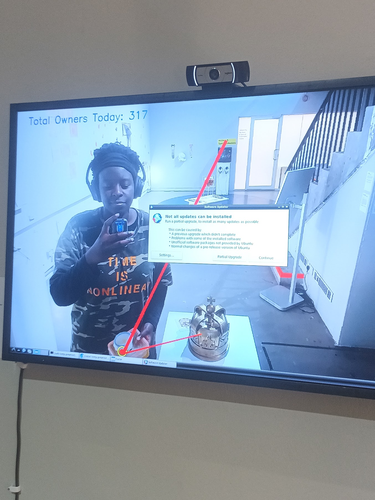

"Creative Data Specialist Technician" at London College of Communication
To me that sounds like a bunch of words, so I prefer describing myself as a tech-art doula...

Hello! 👋
My name is Dolica (it rhymes with Monica). I am part of a team of technicians within London College of Communication's Creative Technology Hub, where we work to support students in developing artworks that incorporate various forms of creative
tech. The Creative Technology Hub is a space that is open to students from any degree programme and with any level of technical experience, and our aim is to create an environment that promotes experimentation and
curiosity. As the Python specialist of the team, my role is centered around supporting students who wish to use Python in some shape or form to further their artistic endeavors. My day-to-day typically involves delivering workshops, writing up tutorials, and providing one-to-one guidance. I got sad seeing so much project-v1 and project-v2 and project-FINAL fielnames in student projects - and so I created a GitHub workshop too, which I believe was the first of its kind in the college available to all students. I also sometimes help students create work that involves AI/ML, which, according to some, means I am a tool of the Antichrist or that I'm not hot. I'll let you be the judge of that.
{kind=link}